전기공사산업기사 (2009-05-10 기출문제)
1과목: 전기응용
1. 다음 중 프로세스 제어에 속하지 않는 것은?
- 위치
- 온도
- 압력
- 유량
(정답률: 78%)

2. 흡상 변압기의 설치 목적은?
- 낙뢰 방지
- 전압강하의 방지
- 통신 유도장해 경감
- 수은등의 점등
(정답률: 71%)
3. 다음 소자 중 온도를 전압으로 변환시키는 요소는?
- 차동변압기
- 열전대
- CdS
- 광전지
(정답률: 71%)
4. 전자 빙 가열의 특징으로 옳지 않은 것은?
- 신속하고 효율이 좋으며 표면 가열이 가능하다.
- 진공 중에서의 가열이 가능하다.
- 에너지의 밀도나 분포를 자유로이 조절할 수 있다.
- 고융점 재료 및 금속박 재료의 용접이 쉽다.
(정답률: 60%)
5. 1.5[kW]의 전동기를 정격상태에서 30분간 사용했을 때 발생 열랑[kcal]은 약 얼마인가?
- 1290
- 860
- 648
- 430
(정답률: 68%)
6. 평균 구면 광도가 150[cd]인 전구로부터 발산되는 총 광속[lm]은 약 얼마인가?
- 48
- 471
- 1480
- 1885
(정답률: 69%)
7. 다음 중 사이리스터를 사용하지 않는 것은?
- 온도 제어 회로
- 타이머 회로
- 링 카운터
- A-D 변환기
(정답률: 50%)
8. 저항 발열체의 구비조건이 아닌 것은?
- 저항의 온도계수가 음(-)수로서 클 것
- 적당한 저항값을 가질 것
- 내식성이 클 것
- 내열성이 클 것
(정답률: 68%)
9. 그림과 같이 반구형(半球形) 천장이 있다. 반지름 r 은 30[cm], 반구 내의 휘도는 4487[cd/m2]로 균일하다. 이 때 a = 2.5[m] 의 거리에 있는 바닥 P 점의 조도는 약 [lx] 인가?
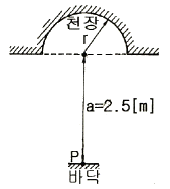
- 100
- 200
- 300
- 400
(정답률: 52%)
10. 천장과 벽면 사이에 조명기구를 배치하여 천장과 벽면을 동시에 투사하는 실내조명 방식은?
- 코너조명
- 코오니스조명
- 밸런스조명
- 광창조면
(정답률: 65%)
11. 유도가열은 어떤 원리를 이용한 것인가?
- 줄열
- 철손
- 유전체손
- 아크손
(정답률: 46%)
12. 대표적인 물리전지로서 반도체 p-n 접합을 이용하여 광전효과에 의해 태양광 에너지를 직접 전기에너지로 전환하는 전지는?
- 열전지
- 태양전지
- 리튬전지
- 반도체 접합형 원자력전지
(정답률: 76%)
13. 용접방법 중 플라즈마 제트에 대한 설명으로 옳지 않은 것은?
- 에너지 밀도가 커서 안정도가 높고 보유 열량이 크다.
- 용접속도가 빠르다.
- 피포가스를 이중으로 사용할 필요가 있고 토치 구조가 복잡하다.
- 균일 용접이 불가하다.
(정답률: 64%)
14. 바깥쪽 레일은 원심력의 작용으로 지나친 하중이 걸려 탈선하기 쉬우므로 안쪽 레일보다 얼마간 높게 한다. 이 바깥쪽 레일과 안쪽 레일의 높이 차를 무엇이라 하는가?
- 편위
- 확도
- 캔트
- 궤간
(정답률: 78%)
15. 전기회로의 전류는 열회로의 무엇과 대응 되는가?
- 열류
- 열량
- 열용량
- 열저항
(정답률: 84%)
16. 불활성 가스의 아크용접에 사용하는 가스는?
- 산소
- 헬륨
- 질소
- 오존
(정답률: 74%)
17. 관성모멘트가 150[kg·m2]의 회전체의 GD2[kg·m2]은?
- 450
- 600
- 900
- 1000
(정답률: 70%)
18. 축전지에서 10시간 방전율이라 하면 일정한 전류로 몇 시간 후 방전 종지 전압에 도달 하는가?
- 5
- 10
- 15
- 20
(정답률: 79%)
19. 2000[lm]을 복사하는 전등 20개를 150[m2]의 식당에 설치 하였다. 그 조명률은 0.5, 감광 보상률을 1.5라면 식당의 평균 조도는 약 몇 [lx] 인가?
- 77.7
- 88.8
- 99.9
- 111.1
(정답률: 71%)
20. 단상 정류로 직류전압 200[V]를 얻으려면 반파 정류의 경우에 변압기의 2차 권선 상전압 Vs 를 약 몇 [V] 하여야 하는가?
- 127
- 200
- 322
- 444
(정답률: 67%)
2과목: 전력공학
21. 변압기의 기계적 보호계전기인 부흐훌쯔계전기(Buchholtz relay)의 설치위치로 알맞은 것은?
- 유면 위의 탱크내
- 컨서베이터 내부
- 변압기의 고압측 부싱
- 주탱크와 컨서베이터를 연결하는 파이프의 관중
(정답률: 36%)
22. 송전선로의 아정도 향상 대책이 아닌 것은?
- 병행 다회선이나 복도체방식 채용
- 속응여자방식 채용
- 계통의 직렬리액턴스 증가
- 고속도 차단기 이용
(정답률: 44%)
23. 정격용량 20000kVA, 임피던스 8%인 3상 변압기가 2차측에서 3상 단락되었을 때 단락용량은 몇 [MVA] 인가?
- 160MVA
- 200MVA
- 250MVA
- 320MVA
(정답률: 32%)
24. 일반적인 경우 그 값이 1 이상인 것은?
- 수용률
- 전압강하율
- 부하율
- 부등률
(정답률: 50%)
25. 원자력발전소와 화력발전소의 특성을 비교한 것 중 옳지 않은 것은?
- 원자력발전소는 화력발전소의 보일러 대신 원자로와 열교환기를 사용한다.
- 원자력발전소의 건설비는 화력발전소에 비하여 낮다.
- 동일 출력일 경우 원자력발전소의 터빈이나 복수기가 화력발전소에 비하여 대형이다.
- 원자력발전소는 방사능에 대한 차폐 시설물이 투자가 필요하다.
(정답률: 46%)
26. 화력발전소에서 재열기의 목적은?
- 공기의 예열
- 급수의 재열
- 증기의 재열
- 배출가스의 재열
(정답률: 34%)
27. 불평형 부하에서 역률은 어떻게 표현되는가?
- 유효전력/각 상의 피상전력의 산술 합
- 유효전력/각 상의 피상전력의 벡터 합
- 무효전력/각 상의 피상전력의 산술 합
- 무효전력/각 상의 피상전력의 벡터 합
(정답률: 43%)
28. 다음 중 지락전류의 크기가 최소인 중성점 접지방식은?
- 비접지
- 소호 리액터접지
- 직접접지
- 고저항접지
(정답률: 44%)
29. 변류기 개방시 2차측을 단락하는 이유는?
- 2차측 절연 보호
- 2차측 과전류 보호
- 측정오차 방지
- 1차측 과전류 방지
(정답률: 39%)
30. 코로나의 방지대책으로 적당하지 않은 것은?
- 복도체를 사용한다.
- 가선금구를 개량한다.
- 전선의 바깥지름을 크게 한다.
- 선간거리를 감소시킨다.
(정답률: 34%)
31. 정사각형으로 배치된 4도체 송전선이 있다. 소도체의 반지름이 1cm이고, 한 변의 길이가 32cm일 때, 소도체간의 기하학적 평균거리는 몇 [cm] 인가?
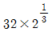
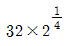
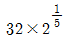
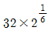
(정답률: 27%)
32. 6600V로 수전하는 자가용 전기 설비가 있다. 수전점에서 계산한 3상 단락 용량은 90MVA 인데 이곳에 시설한 차단기의 최소정격차단전류[kA]로 가장 적당한 것은?
- 2kA
- 8kA
- 12kA
- 14kA
(정답률: 35%)
33. 역률(늦음) 80[%], 10[kvA]의 부하를 가지는 주상변압기의 2차측에 2[kvA]의 전력용 콘덴서를 접속하면 주상변압기에 걸리는 부하는 약 몇 [kvA]가 되겠는가?
- 8kvA
- 8.5kvA
- 9kvA
- 9.5kvA
(정답률: 20%)
34. 일반적으로 전선 1가닥의 단위 길이당의 작용 정전 용량 Cn[㎌/㎞]이
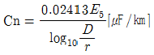
로 표시되는 경우 여기서 D는 무엇을 나타내는가?- 전선 반지름[m]
- 선간 거리[m]
- 전선 지름[m]
- 선간 거리 × 1/2[m]
(정답률: 37%)
35. 수전 설비의 운영에 있어서 인터록(inter lock)의 설명으로 옳은 것은?
- 차단기가 열려 있어야만 단로기를 닫을 수 있다.
- 차단기가 닫혀 있어야만 단로기를 닫을 수 있다.
- 차단기가 열려 있으면 단로기가 닫히고, 단로기가 열려 있으면 차단기가 닫힌다.
- 차단기의 접점과 단로기의 접점이 기계적으로 연결되어 있다.
(정답률: 45%)
36. 중성점이 직접접지된 6600[V], 3상 발전기의 1단자가 접지되었을 경우 예상되는 지락전류의 크기는 약 몇 [A] 인가? (단, 발전기의 임피던스는 Z0 = 0.2 + j0.6[Ω], Z1 = 0.1 + j4.5[Ω], Z2 = 0.5 + j1.4[Ω] 이다.)
- 1578A
- 1678A
- 1745A
- 3023A
(정답률: 29%)
37. 발전기의 단락비가 적어질 경우에 일어나는 현상 중 옳은 것은?
- 발전기가 대형으로 된다.
- 관성정수가 커진다.
- 전압변동률이 커진다.
- 안정도가 향상된다.
(정답률: 38%)
38. 중성점접지방식 중 비접지방식을 직접접지방식과 비교한 것으로 옳지 않은 것은?
- 지락전류가 적다.
- 보호계전기 동작이 확실하다.
- 1선지락시 통신선 유도장해가 적다.
- 과도안정도가 크다.
(정답률: 28%)
39. 임피던스 Z1, Z2 및 Z3을 그림과 같이 접속한 선로의 A쪽에서 전압파 E가 진행해 왔을 때 접속점 B에서 무반사로 되기 위한 조건은?
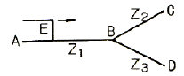
- Z1=Z2+Z3
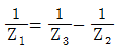
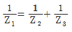
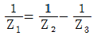
(정답률: 48%)
40. 전력계통의 안정도 향상대책으로 옳지 않은 것은?
- 계동의 직렬 리액턴스를 낮게 한다.
- 고속도 재폐로방식을 채용한다.
- 지락전류를 크게 하기 위하여 직접접지방식을 채용한다.
- 고속도 차단방식을 채용한다.
(정답률: 27%)
3과목: 전기기기
41. 불평형 전압 상태에서 3상 유도전동기를 운전하면 토크와 입력은 어떻게 되는가?
- 토크가 감소하고 입력도 감소한다.
- 토크는 감소하고 입력은 증가한다.
- 토크는 증가하고 입력은 감소한다.
- 토크는 증가하고 입력은 증가한다.
(정답률: 34%)
42. 3상 유도전동기의 전원주파수를 변화하여 속도를 제어하는 경우 전등기의 출력 P와 주파수 f 와의 관계는?
- P∝f
- P∝1/f
- P∝f2
- P는 f에 무관
(정답률: 38%)
43. 다음 중 부하의 변화에 대하여 속도 변동이 가장 큰 직류 전동기는?
- 분권전동기
- 차동 복권 전동기
- 가동 복권 전동기
- 직권전동기
(정답률: 51%)
44. 10[kVA], 2000/100[V] 변압기에서 1차로 환산한 등가 임피던스는 6.2+j7[Ω]이다. 변압기의 % 리액턴스 강하는 얼마인가?
- 0.75[%]
- 1.75[%]
- 3.0[%]
- 6.0[%]
(정답률: 39%)
45. 병렬운전을 하고 있는 3상 동기 발전기에 동기화 전류가 흐르는 경우는 어느 때인가?
- 부하가 증가할 때
- 여자전류를 변화시킬 때
- 부하가 감소할 때
- 원동기의 출력이 변화할 때
(정답률: 19%)
46. 단상 직권정류자전동기의 기본형이 아닌 것은?
- 직권형
- 보상직권형
- 유도보상직권형
- 톰슨형
(정답률: 38%)
47. 회전 변류기의 직류측의 전압을 변경하려면 슬립링에 가해지는 교류측 전압을 변화시킨다. 그 방법이 아닌 것은?
- 직렬리액턴스에 의한 방법
- 유도전압조정기에 의한 방법
- 분류저항 삽입에 의한 방법
- 부하시 전압조정 변압기에 의한 방법
(정답률: 35%)
48. 동기 전동기에서 난조를 일으키는 원인이 아닌 것은?
- 회전자의 관성이 작다.
- 원동기의 토크에 고조파 토크를 포함하는 경우이다.
- 전기자 회로의 저항이 크다.
- 원동기의 조속기의 강도가 너무 예민하다.
(정답률: 24%)
49. 1000[kW], 500[V]의 분권 발전기가 있다. 회전수 240[rpm]이며 슬롯수 192, 슬롯내부 도체수 6, 자극수가 12일 때 전부하시의 자속수[Wb]는 약 얼마인가? (단, 전기자 저항은 0.006[Ω]이고, 단중 중권이다.)
- 0.001
- 0.11
- 0.185
- 1.85
(정답률: 25%)
50. 3상 반파정류회로에서 직류전압의 파형은 전원 전압의 주파수의 몇 배의 교류분을 포함하는가?
- 1
- 2
- 3
- 6
(정답률: 35%)
51. 변압기유(油)의 요구 특성이 아닌 것은?
- 인화점이 높을 것
- 응고점이 낮을 것
- 점도가 클 것
- 절연내력이 클 것
(정답률: 47%)
52. 2대의 단권 변압기를 사용해서 V결선 하면 2대의 자기 용량은?
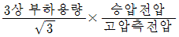
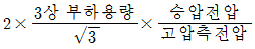
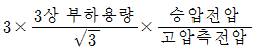
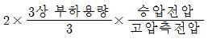
(정답률: 42%)
53. 직류기의 손실 중 가계손에 속하는 것은?
- 브러시의 전기손
- 와전류손
- 풍손
- 전기자권선동손
(정답률: 52%)
54. 운전 코일과 기동 코일로 구성된 단상 유도 전동기의 내부에 설치되어 있으며 일정한 속도에 도달하면 기동권선을 전원으로부터 분리하는 기능을 가지고 있는 스위치는?
- 리미트 스위치
- 원심력 스위치
- 캄 스위치
- 셀렉트 스위치
(정답률: 28%)
55. 4극, 60[Hz]의 3상 동기 발전기가 있다. 회전자의 주변 속도를 240[m/s]로 하려면 회전자의 지름을 약 몇 [m] 로 하여야 하는가?
- 0.03
- 1.91
- 2.5
- 3.2
(정답률: 40%)
56. 단상 유도 전압 조정기에 대한 설명 중 옳지 않은 것은?
- 전압, 위상의 변화가 없다.
- 회전 자계에 의한 유도 작용을 한다.
- 교번 자계의 전자 유도 작용을 이용한다.
- 무단으로 스무드(smooth)하게 전압이 조정된다.
(정답률: 18%)
57. 동기 발전기의 단자 부근에서 단락이 일어났다고 할 때 단락전류에 대한 설명으로 옳은 것은?
- 서서히 증가한다.
- 발전기는 즉시 정지한다.
- 일정한 큰 전류가 흐른다.
- 처음은 큰 전류가 흐르나 점차로 감소한다.
(정답률: 49%)
58. 단상유도전압조정기 2차전압이 100±30[V]이고, 직렬권선의 전류(2차전류)가 5[A]인 경우의 정격출력은 몇 [kVA]인가?
- 0.1[kVA]
- 0.15[kVA]
- 0.26[kVA]
- 0.45[kVA]
(정답률: 33%)
59. 직류전동기의 공급전압을 V[V], 자속을 ø[Wb], 전기자 전류를 la[A], 전기자저항을 Ra[Ω], 속도를 N[rpm]이라 할 때 속도의 관계식은 어떻게 되는가? (단, K 는 상수이다)
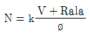
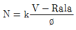
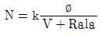
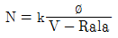
(정답률: 40%)
60. 권선형 유도전동기에서 2차 저항을 변화시켜서 속도제어를 할 경우 최대 토크는?
- 항상 일정하다.
- 2차 저항에만 비례한다.
- 최대 토크가 생기는 점의 슬립에 비례한다.
- 최대 토크가 생기는 점의 슬립에 반비례한다.
(정답률: 45%)
4과목: 회로이론
61. 다음과 같은 회로의 구동점 임피던스는? (단, ω는 회로의 각 주파수이다.)
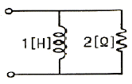
- 2 + jω
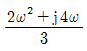
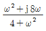
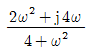
(정답률: 24%)
62. 저항 R1[Ω], R2[Ω] 및 인덕턴스 L[H]이 직렬로 연결되어 있는 회로의 시정수[s]는?
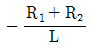
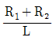
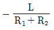
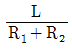
(정답률: 28%)
63. cos ωt 의 라플라스 변환은?
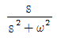
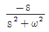
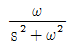
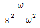
(정답률: 25%)
64. 8[Ω]인 저항과 6[Ω]의 용량 리액턴스 직렬회로에 E=28-j4[V] 인 전압을 가했을 때 흐르는 전류는 몇 [A] 인가?
- 3.5 - j0.5[A]
- 2.48 + j1.36[A]
- 2.8 - j0.4[A]
- 5.3 + j2.21[A]
(정답률: 24%)
65. 기본파의 30[%]인 제3고조파와 기본파의 20[%]인 제5고조파를 포함하는 전압파의 왜형률은 약 얼마인가?
- 0.21
- 0.33
- 0.36
- 0.42
(정답률: 26%)
66. 다음과 같은 전기회로의 입력을 ei, 출력을 eo라고 할 때 전달함수는? (단, T=L/R이다.)
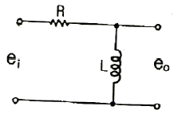
- TS+1
- TS2+1
- 1/TS+1
- TS/TS+1
(정답률: 32%)
67. 두 개의 코일 a, b가 있다. 두 개를 직렬로 접속 하였더니 합성 인덕턴스가 119[mH] 이었고, 극성을 반대로 접속하였더니 합성 인덕턴스가 11[mH] 이었다. 코일 a 의 자기 인덕턴스가 20[mH] 하면 결합계수 K는 얼마인가?
- 0.6
- 0.7
- 0.8
- 0.9
(정답률: 23%)
68. 대칭 3상 Y 결선에서 선간전압이 100√3[V]이고 각 상의 임피던스 Z = 30 + j40[Ω]의 평형부하일 때 선전류는 몇 [A] 인가?
- 2[A]
- 2√3[A]
- 5[A]
- 5√3[A]
(정답률: 22%)
69. 대칭 6상 기전력의 선간 전압과 상기전력의 위상차는?
- 120°
- 60°
- 30°
- 15°
(정답률: 27%)
70. 어느 회로에서 전압과 전류의 복원중 이고, 역률이 0.8일때 무효 복원중 [var]인가? (문제 오류로 현재 복원중입니다. 보기 내용을 아시는 분들께서는 오류 신고를 통하여 보기 작성 부탁 드립니다. 정답은 1번입니다.)
- 360[var]
- 300[var]
- 200[var]
- 100[var]
(정답률: 52%)
71. 다음과 같은 회로에서 출력전압 V2의 위상은 입력전압 V보다 어떠한가?
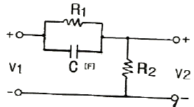
- 같다.
- 앞선다.
- 뒤진다.
- 전압과 관계없다.
(정답률: 29%)
72. 다음과 같은 회로에서 a, b 양단의 전압은 몇 [V] 인가?
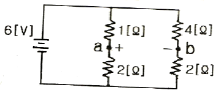
- 1[V]
- 2[V]
- 2.5[V]
- 3.5[V]
(정답률: 39%)
73. 다음과 같은 회로에서 t = 0 인 순간에 스위치 S를 닫았다. 이 순간에 인덕턴스 L에 걸리는 전압은? (단, L의 초기 전류는 0 이다.)
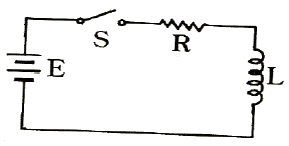
- 0
- E
- LE/R
- E/R
(정답률: 37%)
74. 어떤 회로에서 i=10sin(314t-π/6)[A]의 전류가 흐른다. 이를 복소수로 표시하면?
- 6.12 - j3.54[A]
- 17.32 - j5[A]
- 3.54 - j6.12[A]
- 5 - j17.32[A]
(정답률: 31%)
75. 어떤 교류의 평균값이 566[V]일 때 실효값은 몇 [V] 인가?
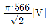
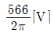
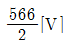
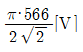
(정답률: 25%)
76. 정전용량 C만의 회로에서 100[V], 60[Hz]의 교류를 가했을 때 60[mA]의 전류가 흐른다면 C 는 몇 [㎌] 인가?
- 5.26[㎌]
- 4.32[㎌]
- 3.59[㎌]
- 1.59[㎌]
(정답률: 38%)
77. 테브난의 정리를 사용하여 다음의 (a)회로를 (b)와 같은 등가 회로로 바꾸려 한다. V[V]와 R[Ω]의 값은?
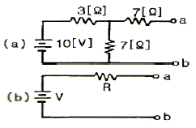
- 7[V], 9.1[Ω]
- 10[V], 9.1[Ω]
- 7[V], 6.5[Ω]
- 10[V], 6.5[Ω]
(정답률: 40%)
78. 위상정수 β = 10[rad/km], 위상속도 v = 20[m/s]일 때 각주파수 ω는 몇 [rad/s] 인가?
- 0.1[rad/s]
- 0.2[rad/s]
- 14.1[rad/s]
- 200[rad/s]
(정답률: 29%)
79. R[Ω]의 3개의 저항을 전압 E[V]의 3상 교류 선간에 그림과 같이 접속할 때 선전류[A]는 얼마인가?
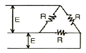
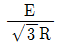
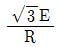
- E/3R
- 3E/R
(정답률: 41%)
80. A, B, C, D 4단자 정수의 관계를 올바르게 나타낸 것은?
- AD + BD = 1
- AB - CD = 1
- AB + CD = 1
- AD - BC = 1
(정답률: 42%)
5과목: 전기설비
81. 전압의 종별을 구분할 때 직류에서의 고압의 범위는?
- 600V를 넘고 6600V 이하인 것
- 750V를 넘고 7000V 이하인 것
- 600V를 넘고 7000V 이하인 것
- 750V를 넘고 6600V 이하인 것
(정답률: 30%)
82. 특별고압 가공전선로의 시설에 대한 내용 중 옳지 않은 것은?
- 특고압가공전선을 지지하는 애자장치는 2련 이상의 현수애자 또는 장간애자를 사용한다.
- A종 철주를 지지물로 사용하는 경우의 경간은 75m이하 이다.
- 사용전압이 100000V를 초과하는 특고압가공전선은 지락 또는 단락이 생겼을 때에는 1초 이내에 자동적으로 이를 전로로부터 차단하는 장치를 시설한다.
- 전선으로 케이블을 사용하는 경우 조가용선에 행거를 사용하여 시설하며, 행거의 간격은 1m 이하로 시설한다.
(정답률: 44%)
83. 정류기의 전로로 대지전압이 220V라고 한다. 이 전로의 전열저항값에 대하여 바르게 설명한 것은?
- 0.1MΩ 이상으로 유지하여야 한다.
- 0.1MΩ 이하로 유지하여야 한다.
- 0.2MΩ 이상으로 유지하여야 한다.
- 0.2MΩ 이하로 유지하여야 한다.
(정답률: 28%)
84. 철도·궤도 또는 자동차도 전용터널안의 전선로를 시설할 때 저압 전선은 인장강도가 몇 [kN] 이상의 절연전선을 사용하여야 하는가?
- 1.38kN
- 2.30kN
- 2.46kN
- 5.26kN
(정답률: 15%)
85. 사용전압이 400V 미만의 저압 가공전선은 케이블이나 절연전선인 경우를 제외하고 인장강도가 3.43kN 이상인 것 또는 지름이 몇 [mm] 이상의 경동선이어야 하는가?
- 1.2mm
- 2.6mm
- 3.2mm
- 4.0mm
(정답률: 10%)
86. 교류 전차선과 식물사이의 이격 거리는 몇 [m] 이상이어야 하는가?
- 1.0m
- 1.5m
- 2.0m
- 2.5m
(정답률: 43%)
87. 345kV의 가공송전선로를 평지에 건설하는 경우 전선의 지표상 높이는 최소 몇 [m] 이상이어야 하는가?
- 7.58m
- 7.95m
- 8.28m
- 8.85m
(정답률: 44%)
88. 저압 옥내배선에 미네럴인슈레이션케이블을 사용하는 경우 단면적은 몇 [mm2] 이상 이어야 하는가?
- 0.75mm2
- 1.0mm2
- 1.2mm2
- 1.25mm2
(정답률: 20%)
89. 지중전선로를 직접 매설식에 의하여 차량 기타 중량물의 압력을 받을 우려가 있는 장소에 시설할 경우에는 그 매설 깊이를 최소 몇 [m] 이상으로 하여야 하는가?
- 1.0m
- 1.2m
- 1.5m
- 1.8m
(정답률: 37%)
90. 고압용의 개폐기·차단기·피뢰기 기타 이와 유사한 기구로 동작시에 아크가 생기는 것은 목재의 벽 또는 천장 기타의 가연성 물질로부터 몇 [m] 이상 떼어놓아야 하는가?
- 0.5m
- 1.0m
- 2.0m
- 3.0m
(정답률: 36%)
91. 다음 중 전력보안 통신용 전화설비를 하여야 하는 곳의 기준으로 옳은 것은?
- 2이상의 급전소 상호간과 이들을 총합 운용하는 급전소간
- 3이상의 급전소 상호간과 이들을 총합 운용하는 급전소간
- 원격감시제어가 되는 발전소
- 원격감시제어가 되는 변전소
(정답률: 28%)
92. 사용전압이 저압인 전로에서 정전이 어려운 경우 등 절연저항 측정이 곤란한 경우에는 누설전류를 몇 [mA] 이하로 유지하여야 하는가?
- 0.1mA
- 1.0mA
- 10mA
- 100mA
(정답률: 26%)
93. 사용전압이 몇 [V] 이상의 변압기를 설치하는 곳에는 절연유의 구외 유출 및 지하침두를 방지하기 위하여 절연유 유출 방지설비를 하여야 하는가?
- 1000V
- 20000V
- 100000V
- 300000V
(정답률: 37%)
94. 다음 중 전선로의 종류에 속하지 않는 것은?
- 산간 전선로
- 수상 전선로
- 물밑 전선로
- 터널 안 전선로
(정답률: 23%)
95. 일반주택 및 아파트 각 호실의 현관등과 같은 조명용 백열전등을 설치할 때에는 타임스위치를 시설하여야 한다. 몇 분 이내에 소등되는 것이어야 하는가?
- 1분
- 3분
- 5분
- 7분
(정답률: 40%)
96. 35000V의 특별고압 가공 전선과 가공약전류 전선을 동일 지지물에 시설하는 경우, 특별고압 가공 전선로는 몇 종 특별고압 보안공사에 의하여야 하는가?
- 제1종
- 제2종
- 제3종
- 제4종
(정답률: 20%)
97. 전압조정기의 내장권선을 이상전압으로부터 보호하기 위하여 특히 필요한 경우에는 그 권선에 몇 종 접지공사를 하여야 하는가?
- 제1종
- 제2종
- 제3종
- 특별 제3종
(정답률: 32%)
98. 옥내에 시설하는 저압 전선에 나전선을 사용할 수 있는 경우는 다음 중 어느 것인가?
- 금속 덕트 공사에 의하여 시설하는 경우
- 버스 덕트 공사에 의하여 시설하는 경우
- 합성 수지관 공사에 의하여 시설하는 경우
- 플로어 덕트 공사에 의하여 시설하는 경우
(정답률: 42%)
99. 옥내에 시설하는 고압의 이동전선의 종류로 알맞은 것은?
- 600V 비닐절연전선
- 비닐 캡타이어 케이블
- 600V 고무절연전선
- 고압용의 3종 클로로프렌 캡타이어 케이블
(정답률: 34%)
100. 제2종 접지공사에 사용하는 접지선을 사람이 접촉할 우려가 있는 곳에 시설하는 경우, 접지선의 어느 부분을 합성수지관 또는 이와 동등 이상의 절연효력 및 강도를 가지는 몰드는 덮어야 하는가?
- 지하 30cm 로부터 지표상 2m 까지
- 지하 50cm 로부터 지표상 1.2m 까지
- 지하 60cm 로부터 지표상 1.8m 까지
- 지하 75cm 로부터 지표상 2m 까지
(정답률: 50%)